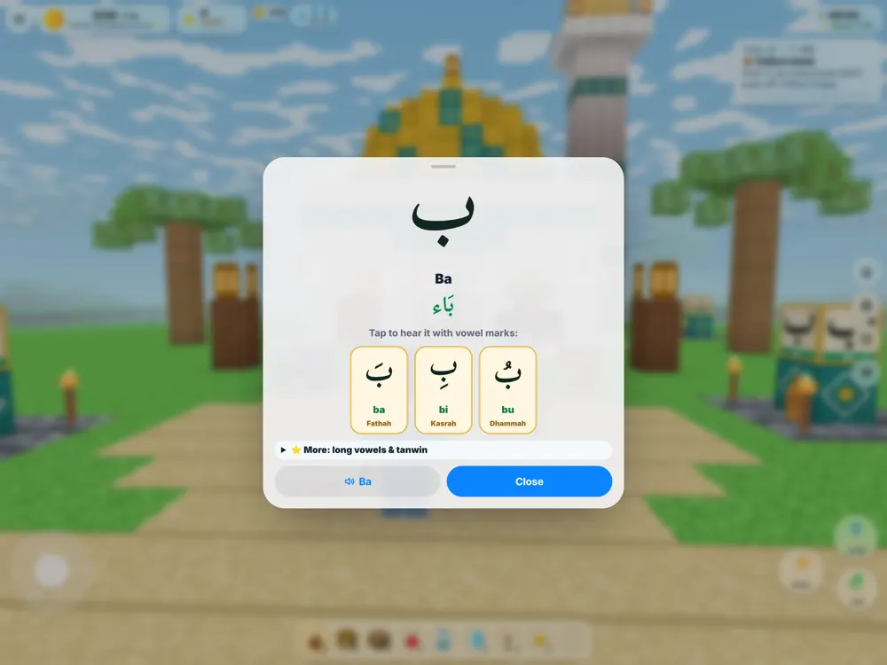

Hijaiyah
Find all 28 letters
Temukan 28 huruf
A golden compass leads to glowing letter shrines. Hear each letter with fathah, kasrah and dhammah: ba, bi, bu.
Kompas emas menuntun ke tugu huruf yang bercahaya. Dengarkan setiap huruf dengan fathah, kasrah, dan dhammah: ba, bi, bu.